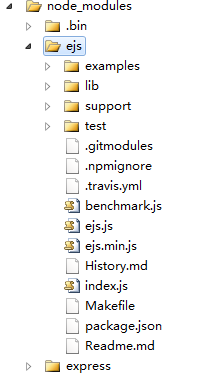
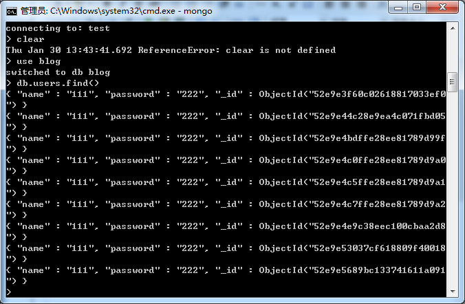

前言
最近同事推荐了一个不错的网址：https://github.com/nswbmw/N-blog/wiki/_pages
里面的教程很是详细，我们现在跟着他的节奏学习下NodeJS，一个简单的博客
我们这次来个过年七天乐......看看能不能nodeJS来个入门
让nodeJS跑起来
第一步当然是安装nodeJS环境了，现在windows安装nodeJS比较快了，直接下载即可：
http://www.nodejs.org/download/
这里根据需要下载，下载完成后直接下一步下一步即可，完了我们就具有nodeJS环境了
第二步，为了方便我们后面操作，我们直接在D盘见了一个文件夹blog
然后打开windows命令行工具，进入d盘，输入：
express -e blog
然后里面可能有依赖包，我们需要进入blog目录安装（安装的配置由package.json提供）：
npm install
这个样子，我们依赖包就下载下来了，其中依赖包与java的包文件，.net的bll文件应该是一个概念
这个时候，我们的程序已经可以运行了：
node app
D:\blog>node app
Express server listening on port 3000
这个时候打开浏览器就有反应了：
这里我们使用的是express（一个流行的nodeJSweb开发框架），并且使用了ejs模板引擎
文件结构
初始化文件目录结构如下：
app.js 为入口文件
package.json 为模块依赖文件，我们使用npm install时候他会以其配置在网上下载相关包
node_modules 为下载下来的模块文件（package.json）
public 存放静态资源文件
routes 存放路由文件
views 存放相关视图模板文件
这个样子，我们基本目录结构就出来了，我们这里先简单说下node_modules这个目录
node_modules/ejs
我们刚刚说了，这里面存放着下载下来的模块，说白了就是js文件集合



1 var parse = exports.parse = function(str, options){ 2 var options = options || {} 3 , open = options.open || exports.open || '<%' 4 , close = options.close || exports.close || '%>' 5 , filename = options.filename 6 , compileDebug = options.compileDebug !== false 7 , buf = ""; 8 9 buf += 'var buf = [];'; 10 if (false !== options._with) buf += '\nwith (locals || {}) { (function(){ '; 11 buf += '\n buf.push(\''; 12 13 var lineno = 1; 14 15 var consumeEOL = false; 16 for (var i = 0, len = str.length; i < len; ++i) { 17 var stri = str[i]; 18 if (str.slice(i, open.length + i) == open) { 19 i += open.length 20 21 var prefix, postfix, line = (compileDebug ? '__stack.lineno=' : '') + lineno; 22 switch (str[i]) { 23 case '=': 24 prefix = "', escape((" + line + ', '; 25 postfix = ")), '"; 26 ++i; 27 break; 28 case '-': 29 prefix = "', (" + line + ', '; 30 postfix = "), '"; 31 ++i; 32 break; 33 default: 34 prefix = "');" + line + ';'; 35 postfix = "; buf.push('"; 36 } 37 38 var end = str.indexOf(close, i) 39 , js = str.substring(i, end) 40 , start = i 41 , include = null 42 , n = 0; 43 44 if ('-' == js[js.length-1]){ 45 js = js.substring(0, js.length - 2); 46 consumeEOL = true; 47 } 48 49 if (0 == js.trim().indexOf('include')) { 50 var name = js.trim().slice(7).trim(); 51 if (!filename) throw new Error('filename option is required for includes'); 52 var path = resolveInclude(name, filename); 53 include = read(path, 'utf8'); 54 include = exports.parse(include, { filename: path, _with: false, open: open, close: close, compileDebug: compileDebug }); 55 buf += "' + (function(){" + include + "})() + '"; 56 js = ''; 57 } 58 59 while (~(n = js.indexOf("\n", n))) n++, lineno++; 60 if (js.substr(0, 1) == ':') js = filtered(js); 61 if (js) { 62 if (js.lastIndexOf('//') > js.lastIndexOf('\n')) js += '\n'; 63 buf += prefix; 64 buf += js; 65 buf += postfix; 66 } 67 i += end - start + close.length - 1; 68 69 } else if (stri == "\\") { 70 buf += "\\\\"; 71 } else if (stri == "'") { 72 buf += "\\'"; 73 } else if (stri == "\r") { 74 // ignore 75 } else if (stri == "\n") { 76 if (consumeEOL) { 77 consumeEOL = false; 78 } else { 79 buf += "\\n"; 80 lineno++; 81 } 82 } else { 83 buf += stri; 84 } 85 } 86 87 if (false !== options._with) buf += "'); })();\n} \nreturn buf.join('');"; 88 else buf += "');\nreturn buf.join('');"; 89 return buf; 90 };
就如，我们这里使用到的ejs模板以及express模块，然后我们好奇的走进了ejs的程序看看究竟有何不同
打开，ejs.js后，我们抽一点代码出来看：这段代码我们比较熟悉，他与underscore的模板引擎代码思想一致，都是将模板解析为字符串
然后通过eval或者new Function的方法将之转换为函数，并且传入自己的数据对象好解析
至于具体工作流程，现在我们还不知道，只能放到后面点研究了，好了我们现在进入其他模块
app.js
作为入口文件，app.js扮演着举足轻重的角色：
1 /** 2 * Module dependencies. 3 */ 4 5 var express = require('express'); 6 var routes = require('./routes'); 7 var user = require('./routes/user'); 8 var http = require('http'); 9 var path = require('path'); 10 11 var app = express(); 12 13 // all environments 14 app.set('port', process.env.PORT || 3000); 15 app.set('views', path.join(__dirname, 'views')); 16 app.set('view engine', 'ejs'); 17 app.use(express.favicon()); 18 app.use(express.logger('dev')); 19 app.use(express.json()); 20 app.use(express.urlencoded()); 21 app.use(express.methodOverride()); 22 app.use(app.router); 23 app.use(express.static(path.join(__dirname, 'public'))); 24 25 // development only 26 if ('development' == app.get('env')) { 27 app.use(express.errorHandler()); 28 } 29 30 app.get('/', routes.index); 31 app.get('/users', user.list); 32 33 http.createServer(app).listen(app.get('port'), function(){ 34 console.log('Express server listening on port ' + app.get('port')); 35 });
我们通过require()命令加载express、http模块，并且会加载routes目录下index user等模板文件
app.set('port', process.env.PORT || 3000)为设置启动时候的端口
app.set('views', __dirname + '/views')为设置存放模板文件的路径，其中__dirname为全局变量，存放当前脚本所在目录，我们这样可以查看：
console.log(__dirname);//index.js加入以下代码 /** D:\blog>node app Express server li D:\blog\routes */
至于这个__dirname是如何获得的，我们暂时也不需要关注
app.set('view engine', 'ejs') 为设置模板引擎为ejs
app.use(express.favicon()) 是设置图标想修改的话就自己去搞public下面的images文件
app.use(express.logger('dev')); express依赖于connect这里就内建中间件会输出一些日志
app.use(express.json()); 用以解析请求体，这里就会把字符串动态转换为json对象
app.use(express.methodOverride()); connect内建中间件，用以处理post请求，并可以伪装put等http方法
app.use(app.router); 调用路由器解析规则
app.use(express.static(path.join(__dirname, 'public'))); connect内建中间件，设置根目录下的public存放静态文件
if ('development' == app.get('env')) { app.use(express.errorHandler()); }
这句话意思是开发状况下要输出错误信息
app.get('/', routes.index);
app.get('/users', user.list);
这两句都是访问时刻具体的处理文件了，比如这里直接访问时默认访问的是routes.index
然后其内部才真正解析模板数据：
exports.index = function (req, res) { console.log(__dirname); res.render('index', { title: 'Express' }); };
http.createServer(app).listen(app.get('port'), function () {
console.log('Express server listening on port ' + app.get('port'));
});
最后会调用上述代码创建http服务器并监听3000端口，成功后便可在网页上访问了
路由
前面我们使用这个方法构建路由
app.get('/', routes.index);
上面代码可以使用这个代码取代（写在app里面）
app.get('/', function (req, res) {
res.render('index', { title: 'Express' });
});
这段代码的意思是访问主页时，调用ejs模板引擎，来渲染index.ejs模板文件
现在再做一点修改，以上代码实现了路由功能，但是我们不能将路由相关代码放到app中，路由多了后app就会变得臃肿，所以我们将相关配置放入index中
所以删除app中相关路由功能，在app结尾加入代码：
routes(app);
然后修改index.js
module.exports = function(app) { app.get('/', function (req, res) { res.render('index', { title: 'Express' }); }); };
这个代码是怎么组织的现在还不清楚，也不去关注了，我们后面慢慢看
路由规则
express封装了多种http请求，我们一般使用get/post两种
app.get();
app.post();
第一个参数为请求路径，第二个参数为回调函数，还是两个参数为request与response
然后，对于req（request）又有以下规则
req.query 处理get请求，获取get请求参数
req.params 处理/:xxx形式的get或者post请求
req.body 处理post请求，获取post请求体
req.params 处理get和post请求，但查找优先级为req.params->req.body->req.query
路径规则还支持正则，具体我们以后再说......
添加路由规则
当我们访问不存在的链接时：
因为不存在/y的路由规则，他也不说public下的文件，所以就404了
现在我们在index.js中添加相关路由：
module.exports = function (app) { app.get('/', function (req, res) { res.render('index', { title: 'Express' }); }); app.get('/y', function (req, res) { res.send('叶小钗'); }); };
这里我页面乱码了：
原因是下载下来后，我的文件是gbk的编码，我们要将他改成utf-8就可以了，模板引擎这块我们就不管他了，我们进入下一节
注册功能
这里我们跟着原博主一起做一个注册的简单功能，这里使用mongo db作为数据库，后面我们再依次完善功能
新建一个register路由，并且为其新建register模板，于是我们开始吧
① 在index中新建路由
app.get('/register', function (req, res) {
res.render('index', { title: '注册页面' });
});
module.exports = function (app) { app.get('/', function (req, res) { res.render('index', { title: 'Express' }); }); app.get('/y', function (req, res) { res.send('叶小钗'); }); app.get('/register', function (req, res) { res.render('register', { title: '注册页面' }); });
<!DOCTYPE html> <html> <head> <title><%= title %></title> <link rel='stylesheet' href='/stylesheets/style.css' /> </head> <body> <h1><%= title %></h1> <form method="post"> <div>用户名：<input type="text" name="name"/></div> <div>密码：<input type="password" name="password"/></div> <div><input type="submit" value="登陆"/></div> </form> </body> </html>
这个样子，我们页面就形成了：
基本程序有了，我们现在需要数据库支持，于是我们要安装mongoDB环境
MongoDB
MongoDB是一个基于分布式文件存储的NoSQL的一种，由C++编写，MongoDB支持的数据结构松散，类似json，我们知道json可以支持任何类型，所以可以搞出很复杂的结构
{ id: 1, name: '叶小钗', frinds: [ { id: 2, name: '素还真' }, { id: 3, name: '一页书' } ] }
安装MongoDB
首先去http://www.mongodb.org/downloads下载安装文件，然后将文件拷贝到D盘改名mongodb，然后在里面新建blog文件夹
然后打开命令行工具将目录切换至bin，输入：
mongod -dbpath d:\mongodb\blog
设置blog文件夹为工程目录并启动数据库，为了方便以后我们写一个命令以后直接点击就启动数据库了：
d:\mongodb\bin\mongod.exe -dbpath d:\mongodb\blog
链接MongoDB
数据库安装成功后，我们的程序还需要相关的“驱动”程序才能链接数据库，这个时候当然要下载包......
打开package.json在dependencies新加一行
{ "name": "application-name", "version": "0.0.1", "private": true, "scripts": { "start": "node app.js" }, "dependencies": { "express": "3.4.8", "ejs": "*", "mongodb": "*" } }
然后运行npm install下载新的依赖包，这个样子与mongoDB相关的驱动就有了，要链接mysql等数据库还需要其他依赖包
这时在根目录下创建setting.js文件，保存数据库连接信息
module.exports = { cookieSecret: 'myblog', db: 'blog', host: 'localhost' };
db是数据库名称，host是数据库地址，cookieSecret用于cookie加密与数据库无关
接下来根目录下新建models文件夹，并在models文件夹下新建db.js
var settings = require('../settings'), Db = require('mongodb').Db, Connection = require('mongodb').Connection, Server = require('mongodb').Server; module.exports = new Db(settings.db, new Server(settings.host, Connection.DEFAULT_PORT), {safe: true});
new Db(settings.db, new Server(settings.host, Connection.DEFAULT_PORT), { safe: true });
设置数据库名，数据库地址和数据库端口创建一个数据库实例，并通过module.exports导出实例，这样就可以通过require对数据库进行读写
需要成功写入数据库，服务器端程序就需要处理post信息，于是我们在models文件夹下新建user.js
var mongodb = require('./db'); function User(user) { this.name = user.name; this.password = user.password; }; module.exports = User; //存储用户信息 User.prototype.save = function (callback) { //要存入数据库的用户文档 var user = { name: this.name, password: this.password }; //打开数据库 mongodb.open(function (err, db) { if (err) { return callback(err); //错误，返回 err 信息 } //读取 users 集合 db.collection('users', function (err, collection) { if (err) { mongodb.close(); return callback(err); //错误，返回 err 信息 } //将用户数据插入 users 集合 collection.insert(user, { safe: true }, function (err, user) { mongodb.close(); if (err) { return callback(err); //错误，返回 err 信息 } callback(null, user[0]); //成功！err 为 null，并返回存储后的用户文档 }); }); }); };
//读取用户信息 User.get = function(name, callback) { //打开数据库 mongodb.open(function (err, db) { if (err) { return callback(err);//错误，返回 err 信息 } //读取 users 集合 db.collection('users', function (err, collection) { if (err) { mongodb.close(); return callback(err);//错误，返回 err 信息 } //查找用户名（name键）值为 name 一个文档 collection.findOne({ name: name }, function (err, user) { mongodb.close(); if (err) { return callback(err);//失败！返回 err 信息 } callback(null, user);//成功！返回查询的用户信息 }); }); }); };
这里一个写数据，一个读数据，处理程序有了，现在需要在index.js前面加上如下程序
var User = require('../models/user.js');
再修改其中的app.post('/register')
app.post('/register', function (req, res) {
var name = req.body.name;
var pwd = req.body.password;
var newUser = new User({
name: name,
password: pwd
});
newUser.save(function (err, user) {
//相关操作，写入session
res.send(user);
});
});
然后点击注册后便会有反应了
如果此时不能确定是否写入数据库，便可进入数据库查询一番，首先切换至数据库目录
D:\mongodb\bin>
输入：
mongo
然后切换其数据库连接至blog
use blog
最后输入
db.users.find()

我们大家就开心的看到数据写入了，于是今天的学习暂时告一段落
结语
今天我们跟着一篇博客完成了从安装到写入数据库的操作，明天让我们来将其它方面加入，逐步深化nodeJS的学习